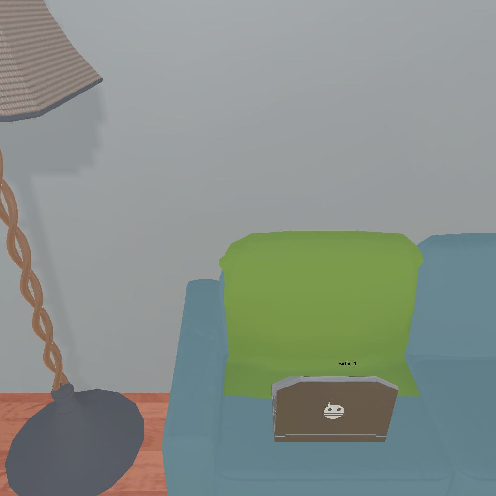

---------------------------------------------------------task: 4---------------------------------------------------------
--------------------------------------------------------------------------------------------------------------------------------------------------------------------
--------------------------------------------------------------------------------------------------------------------------------------------------------------------
Step:--------------------------------------------------------------------------0-------------------------------------------------------------------------------
----------------------------------------
VLM Prompt:
Image1:
**Instruction**
1. Analyze the provided image to identify all visible household objects, focusing on those relevant to the task description "examine the statue with the floorlamp."
2. Use the analysis of the image and the task hint "The agent must find an object of the desired type, locate and turn on a light source with the desired object in-hand." to answer the question: what is the most reasonable action in the choices for the task description "examine the statue with the floorlamp"?
4. Decide and write the answer using the template: The answer is: (i): , where i is the real number. If there is no desired object in the image, search every place based on **Initial Observation** to find the object. And if no one is exactly correct, choose a similar answer.
**Initial Observation**
You are in the middle of a room. Looking quickly around you, you can see armchair (1), coffeetable (1-2), sidetable (1), garbagecan (1), drawer (1), sofa (1), diningtable (1)
**Answer Choices**
(1): go to armchair 1
(2): go to coffeetable 1
(3): go to sidetable 1
(4): go to garbagecan 1
(5): go to drawer 1
(6): go to sofa 1
(7): go to coffeetable 2
(8): go to diningtable 1
**Answer**
Let's think step by step by following the instructions.
----------------------------------------
----------------------------------------
Original Response:
Firstly, we need to identify all visible household objects in the image. The image shows a floorlamp next to a sofa with a green cushion. There is also a sidetable next to the lamp, but it's not fully visible in the image.
Next, based on the task hint, the agent must find an object of the desired type (a statue), locate and turn on a light source (the floorlamp) with the desired object in-hand.
From the **Initial Observation**, we know there are several pieces of furniture in the room, but the task description specifically mentions examining the statue with the floorlamp. Therefore, we need to find the statue first.
Since the image does not show a statue, we must search every place based on **Initial Observation**. None of the answer choices directly mention a statue, so we must choose the option most likely to have a statue based on common household object placement.
The most reasonable action would be to go to the sidetable (option 3) since, typically, small decorative objects such as statues are often placed on sidetables in living rooms.
The answer is: (3): go to sidetable 1.
----------------------------------------
----------------------------------------
>>> Refine Original VLM Response and Get Pure Action: go to sidetable 1
----------------------------------------
-----------------------------------------------------------------
Running time: 20.2872896194458 seconds
Total Money: 1.2229900000000002
-----------------------------------------------------------------
-----------------------------------------------------------------
Text Observation:You arrive at loc 2. On the sidetable 1, you see a statue 1, and a pen 1.
-----------------------------------------------------------------
UNSUCCEED